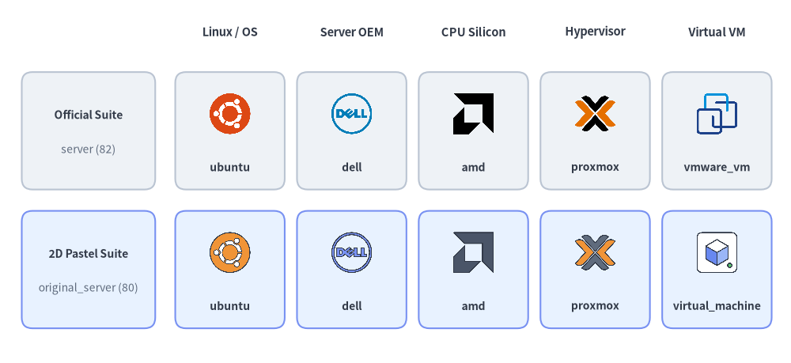
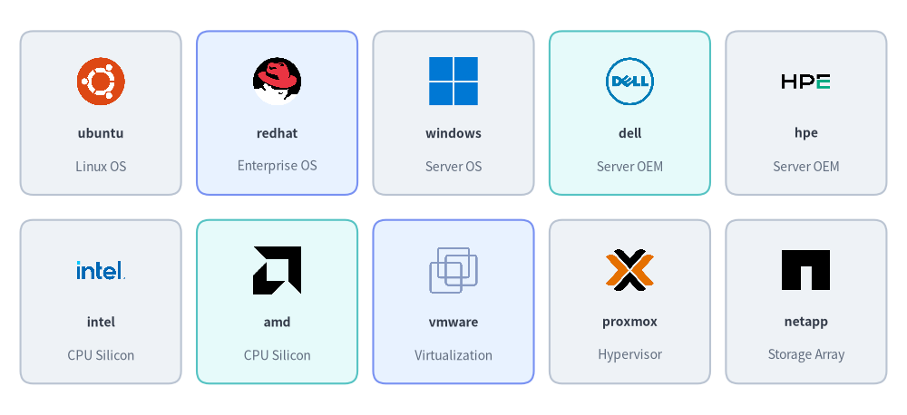
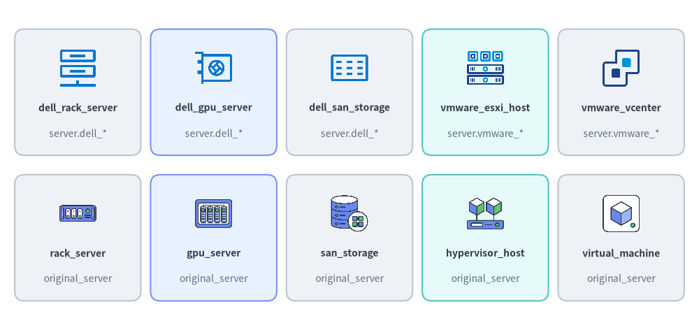
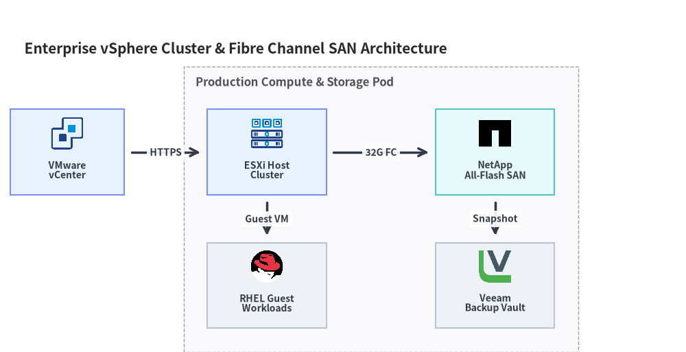

Server, OS & Virtualization Icons (server & original_server)
Drawlib provides two paired icon modules for physical servers, operating systems, CPU architectures, storage arrays, and virtualization platforms: drawlib.icons.server (ServerIcon, 82 official brand, Dell hardware, and VMware vSphere icons) and drawlib.icons.original_server (OriginalServerIcon, 80 flat 2D pastel brand twins and vendor-neutral compute/storage/virtualization concept icons). Both modules share the unified coordinate anchor documented in Icons Overview and plug directly into Architecture Diagrams.

Source Code
from drawlib.canvas import save, setup
from drawlib.icons import original_server, server
from drawlib.shapes import rectangle
from drawlib.styles import Styles
from drawlib.text import text
setup(width=148, height=68)
columns = [
("Linux / OS", "ubuntu", server.ubuntu, original_server.ubuntu),
("Server OEM", "dell", server.dell, original_server.dell),
("CPU Silicon", "amd", server.amd, original_server.amd),
("Hypervisor", "proxmox", server.proxmox, original_server.proxmox),
("Virtual VM", "virtual_machine", server.vmware_vm, original_server.virtual_machine),
]
for col_idx, (cat_label, _, _, _) in enumerate(columns):
cx = 43.0 + col_idx * 22.8
text((cx, 62.0), cat_label, style=Styles.DarkBold.patch(text_size=10.5))
rows = [
(43.5, "Official Suite", "server (82)", Styles.Neutral),
(17.5, "2D Pastel Suite", "original_server (80)", Styles.PrimaryNeutral),
]
for row_idx, (cy, row_title, row_sub, row_style) in enumerate(rows):
rectangle((16.5, cy), width=25.0, height=22.0, style=row_style.patch(shape_r=2))
text((16.5, cy + 3.0), row_title, style=Styles.DarkBold.patch(text_size=10.0))
text((16.5, cy - 3.5), row_sub, style=Styles.Muted.patch(text_size=10.0))
for col_idx, (_, fn_name, fn_off, fn_orig) in enumerate(columns):
cx = 43.0 + col_idx * 22.8
rectangle((cx, cy), width=20.5, height=22.0, style=row_style.patch(shape_r=2))
icon_fn = fn_off if row_idx == 0 else fn_orig
lbl = (
"vmware_vm"
if (row_idx == 0 and fn_name == "virtual_machine")
else fn_name
)
icon_fn((cx, cy + 3.2), width=8.5, style=Styles.Primary)
text((cx, cy - 6.8), lbl, style=Styles.DarkBold.patch(text_size=10.0))
save()
1. API Signature & Twin Module Structure
Every icon in drawlib.icons.server and drawlib.icons.original_server is a center-anchored (cx, cy) function that renders a 512×512 RGBA PNG asset at a 1:1 square aspect ratio:
from drawlib.diagrams.architecture import Node, OriginalServerIcon, ServerIcon
from drawlib.icons import original_server, original_server_icon, server, server_icon
from drawlib.styles import Styles
# 1. Direct module function calls (56 shared brand names + domain-specific hardware/concepts)
server.redhat((30, 25), width=10.0, style=Styles.Primary)
original_server.redhat((55, 25), width=10.0, style=Styles.Primary)
server.dell_rack_server((80, 25), width=10.0, style=Styles.Primary)
original_server.rack_server((105, 25), width=10.0, style=Styles.Primary)
# 2. Dynamic string lookup helpers
server_icon((30, 10), width=9.0, name="ubuntu", style=Styles.Primary)
original_server_icon((55, 10), width=9.0, name="hypervisor_host", style=Styles.Primary)
# 3. Strongly typed Enums for ArchitectureDiagram & SequenceDiagram
node_a = Node("RHEL Host", icon=ServerIcon.REDHAT)
node_b = Node("Hypervisor", icon=OriginalServerIcon.HYPERVISOR_HOST)
| Feature | drawlib.icons.server |
drawlib.icons.original_server |
|---|---|---|
| Visual Style | Official vendor logos + Dell/VMware hardware & topology artwork | Cohesive 2D pastel brand twins & vendor-neutral infrastructure concepts |
| Total Canonical Icons | 82 (56 brands + 12 dell_* + 14 vmware_*) |
80 (56 brand twins + 24 vendor-neutral concepts) |
| Diagram Enum | ServerIcon.<NAME> |
OriginalServerIcon.<NAME> |
| Dynamic Dispatcher | server_icon(xy, width, name=..., style=...) |
original_server_icon(xy, width, name=..., style=...) |
| Asset Package | icon_server |
icon_original_server |
2. Shared Brand & Vendor Icons (56 Icons in Both Modules)
Both server and original_server provide the exact same 56 canonical brand and open-source project names spanning Linux/BSD/Windows operating systems, enterprise server OEMs, CPU silicon architectures, hypervisors, and enterprise storage vendors:

Source Code
from drawlib.canvas import save, setup
from drawlib.icons import server
from drawlib.shapes import rectangle
from drawlib.styles import Styles
from drawlib.text import text
setup(width=144, height=66)
row1 = [
("ubuntu", "Linux OS", server.ubuntu, Styles.Neutral),
("redhat", "Enterprise OS", server.redhat, Styles.PrimaryNeutral),
("windows", "Server OS", server.windows, Styles.Neutral),
("dell", "Server OEM", server.dell, Styles.SecondaryNeutral),
("hpe", "Server OEM", server.hpe, Styles.Neutral),
]
row2 = [
("intel", "CPU Silicon", server.intel, Styles.Neutral),
("amd", "CPU Silicon", server.amd, Styles.SecondaryNeutral),
("vmware", "Virtualization", server.vmware, Styles.PrimaryNeutral),
("proxmox", "Hypervisor", server.proxmox, Styles.Neutral),
("netapp", "Storage Array", server.netapp, Styles.Neutral),
]
for row_idx, items in enumerate([row1, row2]):
cy = 48.0 if row_idx == 0 else 18.0
for col_idx, (fn_name, cat, icon_fn, card_st) in enumerate(items):
cx = 16.0 + col_idx * 28.0
rectangle((cx, cy), width=25.5, height=26.0, style=card_st.patch(shape_r=2))
icon_fn((cx, cy + 5.0), width=8.5, style=Styles.Primary)
text((cx, cy - 3.2), fn_name, style=Styles.DarkBold.patch(text_size=10.0))
text((cx, cy - 8.5), cat, style=Styles.Muted.patch(text_size=10.0))
save()
2.1. Complete Shared Brand Icon Reference (56 Canonical Names)
Every function name below is available identically as server.<name>() (ServerIcon.<NAME>) and original_server.<name>() (OriginalServerIcon.<NAME>):
| Category | Count | Canonical Function Names (server.* & original_server.*) |
|---|---|---|
| Linux Distributions | 13 | almalinux, alpine_linux, arch_linux, centos, debian, fedora, kali_linux, linux, nixos, redhat, rocky_linux, suse, ubuntu |
| BSD, Desktop & Server OS | 4 | apple, freebsd, openbsd, windows |
| Enterprise Server OEMs | 9 | asus, dell, fujitsu, hitachi, hpe, ibm, lenovo, nec, supermicro |
| CPU & Silicon Architectures | 4 | amd, arm, intel, risc_v |
| SBC, Compact & Power Hardware | 5 | apc, arduino, beaglebone, mac_mini, raspberry_pi |
| Hypervisors, Virtualization & Cloud | 10 | citrix, kvm, lxc, nutanix, openstack, proxmox, qemu, virtualbox, vmware, xen |
| Enterprise Storage, NAS & Backup | 11 | buffalo, netapp, openzfs, pure_storage, qnap, rubrik, seagate, synology, truenas, veeam, western_digital |
3. Hardware & Virtualization Topology Icons (dell_* / vmware_* vs. Vendor-Neutral Concepts)
In addition to the 56 shared brand icons, each module provides specialized infrastructure topology icons tailored to its visual tier:
drawlib.icons.server(26icons): Includes 12 Dell hardware/storage appliance icons (dell_*) and 14 VMware vSphere virtualization icons (vmware_*).drawlib.icons.original_server(24icons): Includes 24 vendor-neutral 2D pastel server, storage, and virtualization concept icons (rack_server,gpu_server,hypervisor_host,virtual_machine,san_storage, etc.) that map directly to the physical and virtual layers without vendor branding.

Source Code
from drawlib.canvas import save, setup
from drawlib.icons import original_server, server
from drawlib.shapes import rectangle
from drawlib.styles import Styles
from drawlib.text import text
setup(width=144, height=68)
row1 = [
("dell_rack_server", "server.dell_*", server.dell_rack_server, Styles.Neutral),
("dell_gpu_server", "server.dell_*", server.dell_gpu_server, Styles.PrimaryNeutral),
("dell_san_storage", "server.dell_*", server.dell_san_storage, Styles.Neutral),
("vmware_esxi_host", "server.vmware_*", server.vmware_esxi_host, Styles.SecondaryNeutral),
("vmware_vcenter", "server.vmware_*", server.vmware_vcenter, Styles.Neutral),
]
row2 = [
("rack_server", "original_server", original_server.rack_server, Styles.Neutral),
("gpu_server", "original_server", original_server.gpu_server, Styles.PrimaryNeutral),
("san_storage", "original_server", original_server.san_storage, Styles.Neutral),
("hypervisor_host", "original_server", original_server.hypervisor_host, Styles.SecondaryNeutral),
("virtual_machine", "original_server", original_server.virtual_machine, Styles.Neutral),
]
for row_idx, items in enumerate([row1, row2]):
cy = 49.0 if row_idx == 0 else 19.0
for col_idx, (fn_name, mod_label, icon_fn, card_st) in enumerate(items):
cx = 16.0 + col_idx * 28.0
rectangle((cx, cy), width=26.0, height=26.0, style=card_st.patch(shape_r=2))
icon_fn((cx, cy + 5.0), width=8.5, style=Styles.Primary)
text((cx, cy - 3.2), fn_name, style=Styles.DarkBold.patch(text_size=10.0))
text((cx, cy - 8.5), mod_label, style=Styles.Muted.patch(text_size=10.0))
save()
3.1. drawlib.icons.server — Dell Hardware & VMware vSphere Icons (26 Icons)
| Sub-Suite | Count | Canonical Function Names (server.* / ServerIcon.*) |
|---|---|---|
Dell Server & Compute Hardware (dell_*) |
7 | dell_blade_chassis, dell_bmc_management, dell_fc_switch, dell_gpu_server, dell_hci_appliance, dell_rack_server, dell_tower_server |
Dell Storage & Backup Appliances (dell_*) |
5 | dell_backup_appliance, dell_nas_storage, dell_object_storage, dell_san_storage, dell_tape_library |
VMware vSphere Hosts & Clusters (vmware_*) |
6 | vmware_cluster, vmware_esxi_host, vmware_rack_server, vmware_resource_pool, vmware_vcenter, vmware_vmotion |
VMware Virtual Machines & Storage (vmware_*) |
8 | vmware_datastore, vmware_snapshot, vmware_storage_array, vmware_template, vmware_vm, vmware_vm_group, vmware_vsan, vmware_vswitch |
3.2. drawlib.icons.original_server — Vendor-Neutral Hardware & Virtualization Concepts (24 Icons)
| Sub-Suite | Count | Canonical Function Names (original_server.* / OriginalServerIcon.*) |
|---|---|---|
| Physical Servers & Out-of-Band Management | 7 | blade_chassis, bmc, gpu_server, hci_appliance, management_server, rack_server, tower_server |
| Hypervisor Hosts, VMs & Live Migration | 9 | host_cluster, hypervisor_host, live_migration, resource_pool, virtual_machine, virtual_switch, vm_group, vm_snapshot, vm_template |
| SAN, NAS, Object Storage & Backup | 8 | backup_appliance, datastore, fc_switch, nas_storage, object_storage, san_storage, tape_library, virtual_san |
4. Practical Architecture Diagram
The following example builds a hybrid virtualization and SAN storage topology using ArchitectureDiagram and ServerIcon:
from drawlib.canvas import clear, save, setup
from drawlib.diagrams.architecture import ArchitectureDiagram, Node, NodeGroup, ServerIcon
from drawlib.styles import Styles
clear()
setup(width=144, height=74)
d = ArchitectureDiagram(
node_style=Styles.Primary,
node_text_style=Styles.DarkBold.patch(text_size=10.0),
edge_style=Styles.DarkBold,
edge_text_style=Styles.DarkBold.patch(text_size=10.0),
node_card_style=Styles.Neutral,
title="Enterprise vSphere Cluster & Fibre Channel SAN Architecture",
)
vcenter = d.add(
Node(
"VMware\nvCenter",
width=24,
height=18,
icon=ServerIcon.VMWARE_VCENTER,
icon_size=7.5,
card_style=Styles.PrimaryNeutral,
),
xy=(10.0, 38.0),
)
cluster = d.add(NodeGroup(title="Production Compute & Storage Pod", padding=5.0), xy=(40.0, 4.0))
esxi = cluster.add(
Node(
"ESXi Host\nCluster",
width=25,
height=18,
icon=ServerIcon.VMWARE_ESXI_HOST,
icon_size=7.5,
card_style=Styles.PrimaryNeutral,
),
xy=(12.0, 34.0),
)
rhel = cluster.add(
Node(
"RHEL Guest\nWorkloads",
width=25,
height=18,
icon=ServerIcon.REDHAT,
icon_size=7.5,
),
xy=(12.0, 6.0),
)
san = cluster.add(
Node(
"NetApp\nAll-Flash SAN",
width=25,
height=18,
icon=ServerIcon.NETAPP,
icon_size=7.5,
card_style=Styles.SecondaryNeutral,
),
xy=(60.0, 34.0),
)
veeam = cluster.add(
Node(
"Veeam\nBackup Vault",
width=25,
height=18,
icon=ServerIcon.VEEAM,
icon_size=7.5,
),
xy=(60.0, 6.0),
)
d.connect(vcenter, esxi, label="HTTPS", padding=1.5)
d.connect(esxi, rhel, label="Guest VM", padding=1.5)
d.connect(esxi, san, label="32G FC", padding=1.5)
d.connect(san, veeam, label="Snapshot", padding=1.5)
d.draw(xy=(4.0, 4.0))
save()

[!TIP] See Network & Cisco Topology Icons (
network&original_network) for physical switches, routers, and firewalls, or Data Center & Facility Icons (facility&original_facility) for racks, UPS power, and colocation buildings.